Problématique : Gestion des câbles
Énoncé / Descriptif
Dans ce défi, il était demandé de retrouver un bateau coupable d'avoir détruit un cable sous-marin. Pour identifier ce bateau, on nous fourni des messages AIS hordotés ainsi que l'heure et le lieu de l'incident.
Résolution
- Première lecture des messages AIS. On peut déjà éliminer tous les messages n'ayant pas été transmis à
12:33:56(heure de l'incident). - Il nous reste alors 12 messages AIS. Il faut maintenant les décoder. J'ai donc trouvé une bibliothèque python permettant de faire ainsi.
- On se rend alors compte qu'il n'y que 8 messages (dont 4 messages contenant 2 parties). Il y a quatre messages de type 1 et quatre messages de type 5, je comprends donc que les 8 messages sont des paires de deux messages car les MMSI renseignés correspondent.
- En combinant les deux types de message, on sait précisément où se trouvait les quatre bateaux à l'heure de l'incident.
- Le bateau le plus proche est alors le
EVERGREENavec un MMSI607860367.
Outil(s) / Ressource(s) utilisé(s)
Difficulté(s) rencontrée(s)
J'ai mis du temps à trouver un décodeur approprié aux besoins de l'énoncé. Bien que "AIS" soit écrit dans l'énoncé, je cherchais pour décoder des messages "AIVDO".
Ce que j’ai appris
- Lire toutes les consignes.
Captures d’écran
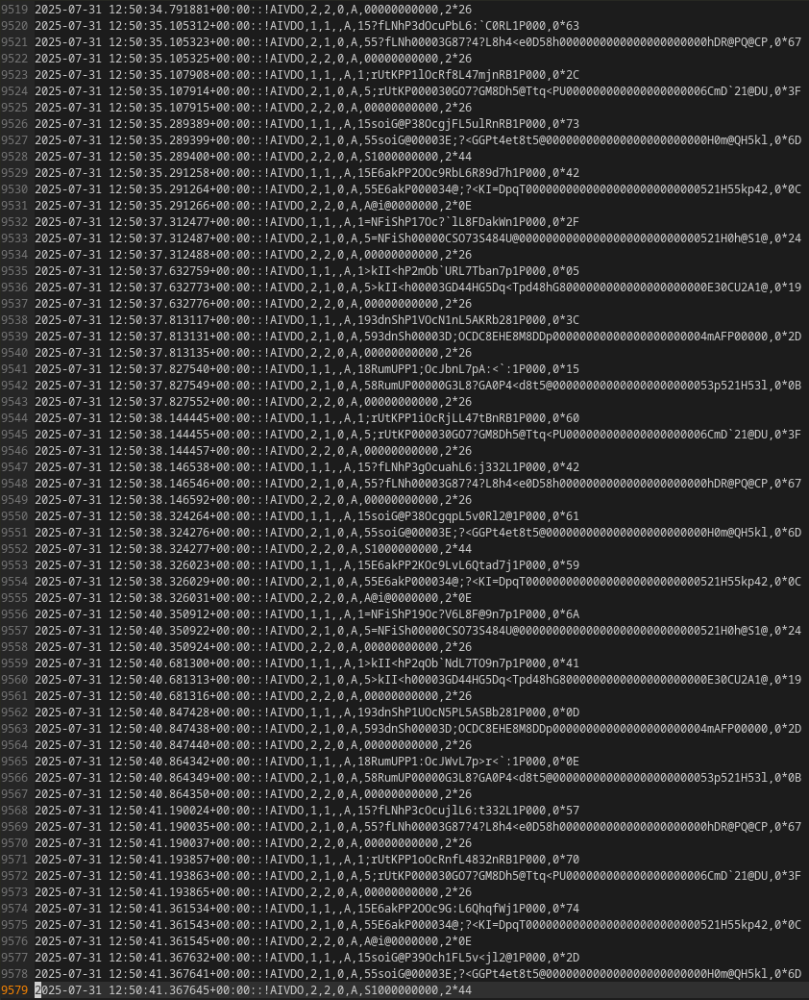
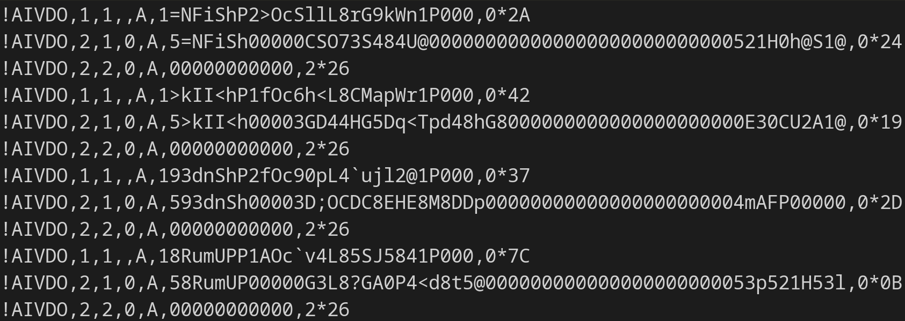
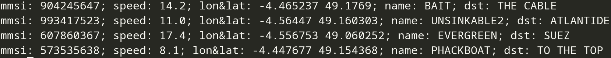
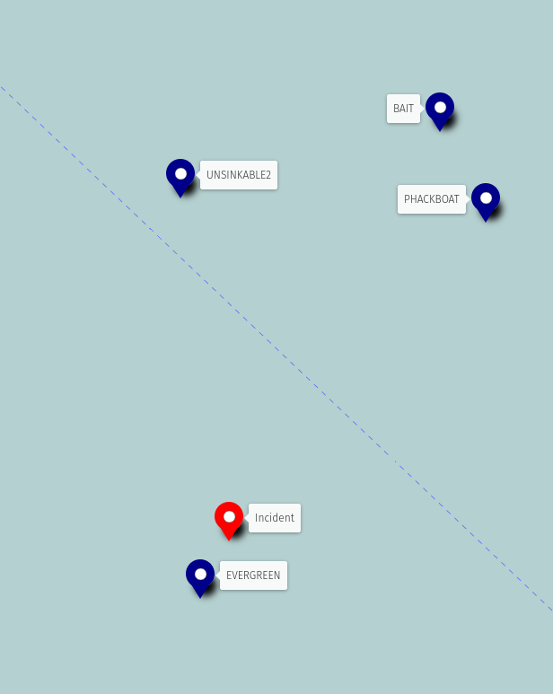
Problématique : Cyberquiz
Énoncé / Descriptif
Dans ce défi, il était demandé de contourner les restrictions d'un quiz en ligne. Les deux premières réponses pouvait être facilement obtenues tandis que toutes les autres réponses étaient impossible à trouver. Même si on trouvait les bonnes réponses, le quiz ne nous donnait pas nos résultats. Le code source du serveur web était donné.
Résolution
- Analyser le code source du serveur web. Il y a une requête intéressante :
GET /questionsqui renvoie toutes les questions/réponses du quiz. Cependant si la provenance de la requête n'est pas locale, la requête est rejetée. -
Repérer la fonction "vulnérable". Ici, la requête
GET /verificationcontient les lignes suivantes :const fetch_url = new URL(`http://localhost:3002/${req.query.fetch_endpoint}`); ... const d_res = await fetch(fetch_url);Ce qui veut dire que l'on peut demander n'importe quelle resource en contournant la restriction d'origine. - On issue alors la requête :
GET /verification?fetch_url=questions&qnumber=&answer=et on obtient toutes les réponses du quiz dont le flag. - Soumettre le flag
FLAG{V0us_n'êt3s_P4s_Supp0sé_V01r_C3C1}sur la plateforme.
Outil(s) / Ressource(s) utilisé(s)
- Firefox DevTools
Difficulté(s) rencontrée(s)
Aucune.
Ce que j’ai appris
- Découverte du framework expressJS.
Captures d’écran
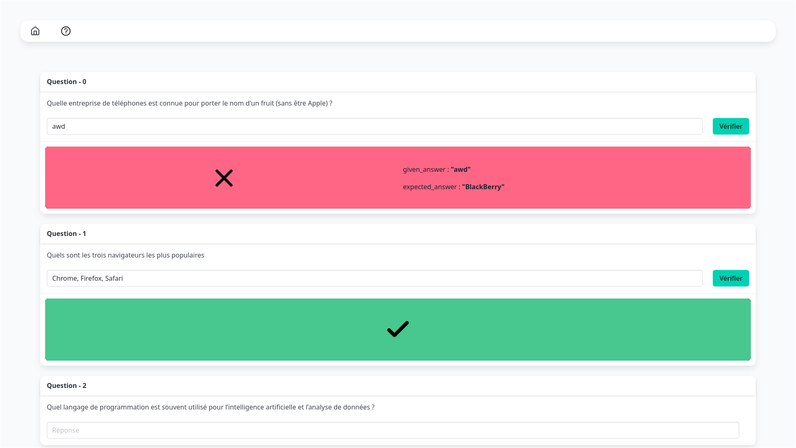
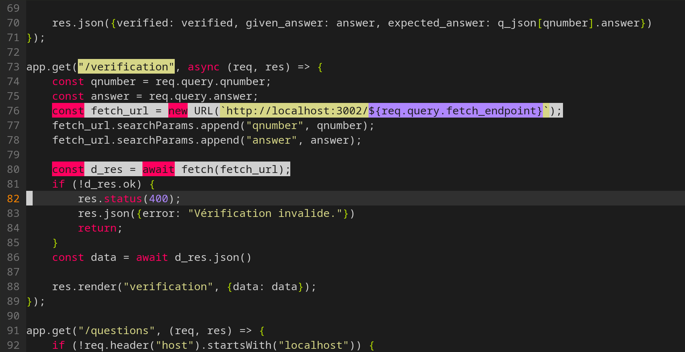
Problématique : Survivant Crescendo
Énoncé / Descriptif
Pour ce défi, il était demandé de terminer un jeux impossible à terminer (dans les règles). On devait alors tricher pour obtenir le flag.
Résolution
- Expérimentation du jeu, il n'a, effectivement, pas l'air possible. Analyse du code du jeu. Le jeu est principalement exécuté en assembleur, mais on trouve une interface pour communiquer en JavaScript.
- Je remarque la méthode
game.apply_upgrade(upgrade_key, mult)permettant de s'octroyer des améliorations démesurées grâce au paramètremult. - Exécution de
game.apply_upgrade("bassDrop", 1e100);dans la console et victoire peu après. - Soumettre le flag
FLAG{V@~pireS_W3re_t00_ez}sur la plateforme.
Outil(s) / Ressource(s) utilisé(s)
- Firefox DevTools
Difficulté(s) rencontrée(s)
Aucune. L'objet game était exporté intentionnellement. Cela renda la chasse au drapeau encore plus simple.
Ce que j’ai appris
- Découverte du WebAssembly.
Captures d’écran
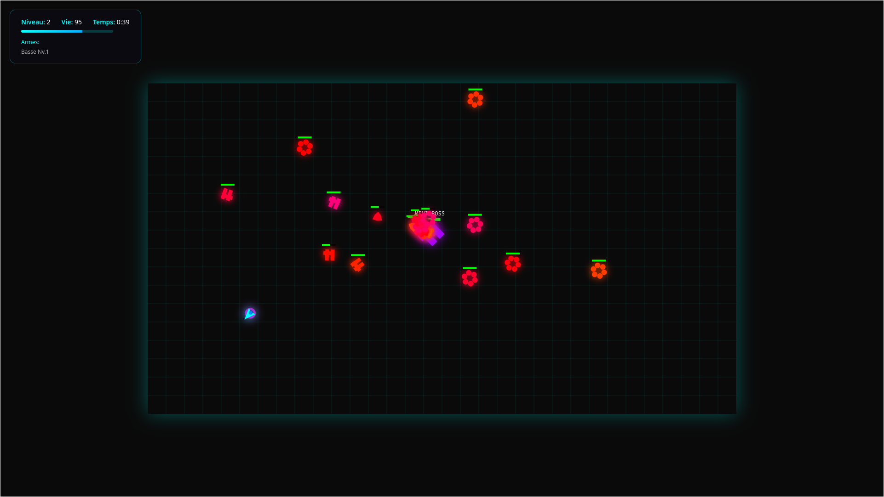
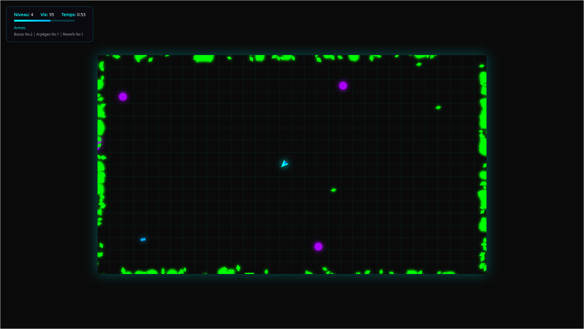
Problématique : Connecte 4
Énoncé / Descriptif
Pour ce challenge, il fallait performer de l'ingénierie inverse pour trouver quatre codes de trois chiffres chacun. Trois codes étaient vérifiés en local par un programme compilé en WebAssembly et le dernier code était vérifié par une fonction JavaScript obfusquée, toujours localement.
Résolution
- Analyser le code JavaScript pour identifier le processus de vérification. Quatre fonctions anonymes sont déclarées, une pour chaque code. Pour avoir un meilleur contrôle sur le code exécuté, on télécharge les ressources du site pour en héberger un autre presque identique, localement. On peut alors accéder aux fonctions anonymes qui font appel aux fonctions
num1,num2,num3,num4. - Trois des fonctions passent le code entré par l'utilisateur dans trois autres fonctions et vérifient que la valeur retournée par chaque fonction est égale à trois constantes connues. La dernière fonction anonyme fonctionne ainsi :
retourne VRAI si num4(29) = code_entré sinon FAUX. - Pour cette dernière fonction, il suffit juste de récupérer la valeur
num4(29)en écrivant cette même ligne dans la console. On obtient alors841comme quatrième code. - Pour les trois autres fonctions, j'ai d'abord pensé à la force brute. En effet, ce sont des codes de trois chiffres donc 1000 possibilités. Même pour la fonction JavaScript obfusquée, cela ne prendra pas plus d'une seconde.
- En utilisant une simple boucle, j'ai réussi à obtenir les premier et troisième codes (
256et771) mais sans succès pour le second. Le processus prenait anormalement trop de temps. - Pour le deuxième code, j'ai inspecté le WebAssembly désassemblé pour interpréter le fonctionnement de cette fonction. J'ai d'abord compris d'où venait le ralentissement de la méthode force brute : la fonction attends 1500 millisecondes avant de soustraire le code entré de 999 et de passer le résultat à une autre fonction.
- Cette dernière fonction est étrange, c'est pourquoi j'ai décidé de convertir les deux fonctions en python pour y voir plus clair.
- Après implémation des fonctions en python, je simplifie la fonction étrange et me rends compte qu'elle calcule le n-ième terme de la suite de Fibonacci mais en ajoutant 11 à chaque terme. C'est une fonction doublement récursive (elle s'appelle deux fois) ce qui rend l'exécution de cette dernière encore plus longue.
- On réécrit donc la fonciton de façon à ce qu'elle soit itérative et non récursive. On peut maintenant forcer le code en essayant les 1000 possibilités rapidement. On obtient le code
968. - En les entrant dans l'ordre sur le site (
256 - 968 - 771 - 841), on obtient le flag.
Outil(s) / Ressource(s) utilisé(s)
- Firefox DevTools
- Un interpréteur python
Difficulté(s) rencontrée(s)
Je n'ai pas rencontré de difficultés particulières.
Ce que j’ai appris
- J'ai déduis et compris le fonctionnement du WebAssembly.
Captures d’écran
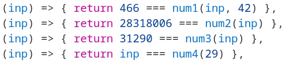
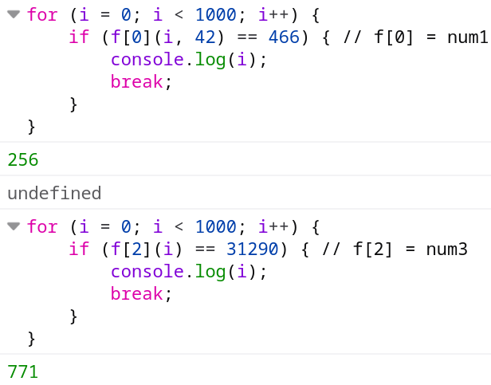
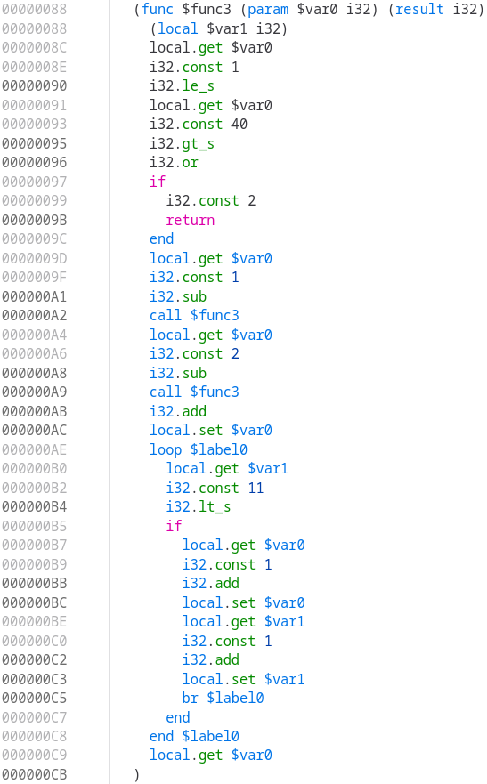
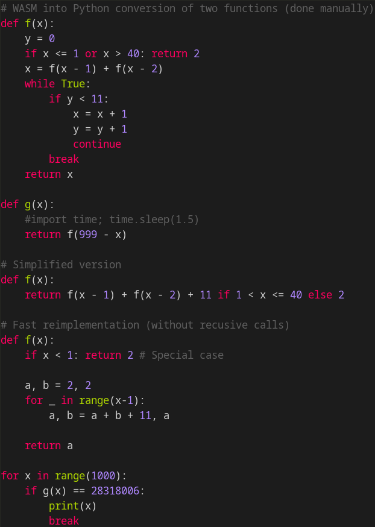
Problématique : Session Sécurisée Hostile
Énoncé / Descriptif
Pour résoudre ce défi, il fallait analyser un client pour comprendre le protocole utilisé et récupérer le flag sur un serveur distant.
Résolution
- Inspection des fichiers fournis, des 4 bibliothèques python et un script python.
- Ce client semble utiliser le système d'appel de procédure à distance de google (gRPC).
- En me renseignant sur son fonctionnement, je crois comprendre que le client qu'on m'a fourni contient des éléments superflux : les bibliothèques "client" et "common" ne sont pas nécessaires au fonctionnement de gRPC mais apportent une interface python moins lourde.
- Après des recherches approfondies, je comprends que les clients gRPC font des appels à des fonctions avec comme arguments des structures sérialisables. En python, les arguments et les appels au fonctions sont représentés par des classes. D'abord, on crée une voie de communication, ensuite on instancie le client et on fait appel aux fonctions qui nous intéressent. Cependant, pour pouvoir sérialiser les structures de données, il faut un fichier protobuf qui spécifie la structure des donées. Ce fichier nous servira de "documentation" pour connaître les fonctionnalités disponibles.
- Au lieu de retrouver le fichier dans des fichiers binaires dont la structure m'est inconnue, je décide de moi-même générer ces fichiers inconnus à partir d'informations connues. Je crée donc un fichier
.protoà partir de l'exemple de la documentation en ligne de gRPC. Je compile ce fichier et obtient deux fichiers python. Bien que ces fichiers soient des scripts python et non des bibliothèques compilées, je comprends mieux d'où vient le fichier protobuf. Il est désérialisé à partir de sa version compilée. Heureusement, la version compilée conserve les nom des procédures. Je peux donc rapidement identifier le fichier protobuf intégré à la bibliothèque. - Maintenant qu'on a pu extraire le fichier protobuf, je le désérialise et le convertit en fichier
.proto, lisible par l'humain. Je découvre alors les méthodes qui me sont disponibles et je complète le script python donné pour qu'il enregistre un compte administrateur, se connecte avec ce dernier et récupère le flag.
Outil(s) / Ressource(s) utilisé(s)
- Documentation en ligne de gRPC
- Un interpréteur python
- Les outils de la bibliothèque grpc pour compiler mes propres fichiers protobufs
Difficulté(s) rencontrée(s)
gRPC est une technologie que je ne connais pas, bien que je comprends maintenant son fonctionnement, la manière dont le client était implémenté reste un mystère pour moi. En conséquence j'ai mis beaucoup de temps à rechercher des éléments des bibliothèques qui n'interagissaient pas directement avec gRPC.
De plus, malgré la capture du flag, je n'ai toujours pas totalement compris le client fourni, seulement les technologies gRPC ce qui rend la résolution ci-dessus un peu floue.
Ce que j’ai appris
- Découverte du concept RPC et de la technologie gRPC.
- Essayer les technologies par soi-même avant d'essayer de comprendre des implémentations tentaculaires.
Captures d’écran
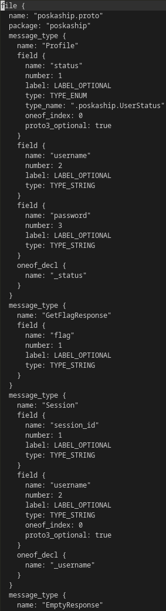
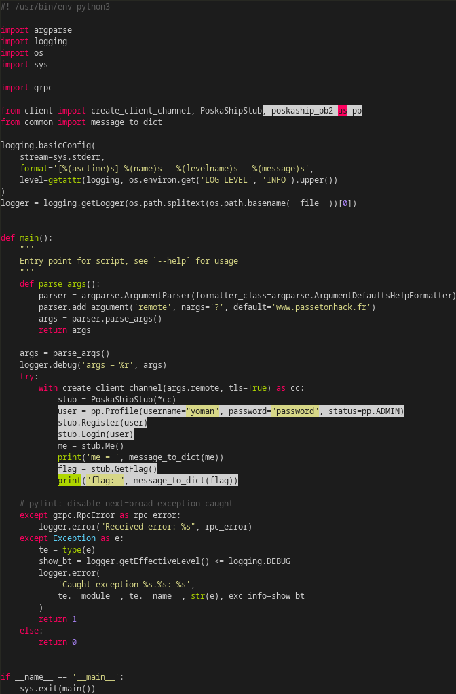
Problématique : Cuitochette
Énoncé / Descriptif
Pour ce challenge, il fallait performer de l'ingénierie inverse pour reconstituer le seul mot de passe valide d'un exécutable binaire. Ce mot de passe fait office de flag.
Résolution
- Recherche de flag écrits en brut dans l'exécutable
strings cuitochette | grep -i flag. Sans succès. - Importation de l'exécutable dans ghidra et analyse automatique faite par le logiciel.
- Première lecture de la fonction
mainet attribution de noms aux variables pour y voir plus clair. - Après plusieurs relectures, je comprends que le programme se divise : le parent trace l'enfant et l'enfant exécute une fonction définie au moment de l'exécution. Cette fonction est mise à jour tous les deux caractères du mot de passe entré et ces deux caractères sont fournis à la fonction d'une manière peu conventionnelle.
- À chaque itération, le processus parent initialise les registres d'usage général
RAXetRDXavec deux caractères du mot de passe, ajoute une partie de code après là où l'enfant s'était arrêté et il résume l'exécution de l'enfant. Ce dernier performe plusieurs fois la porte logique ou exclusif entre les registresRAX,RDXet la mémoire après quoi, il déclenche expressément une violation de la segmentation (SIGSEGV) ou il exécute l'instructionint3qui déclenche le signalSIGTRAP. Après avoir passé tous les caractères du mot de passe entré par l'utilisateur, l'enfant se termine et le parent compare le résultat de tous les caractères modifiés par l'enfant avec le modèle (correspondant au bon mot de passe). - Il faut donc faire les opérations ou exclusif dans le sens inverse pour retrouver le mot de passe original.
- Cependant, la mémoire avec laquelle le mot de passe est "mélangée" est elle-même modifiée pendant l'exécution du programme (juste avant que l'enfant exécute la fonction procédurale). De plus, les morceaux de fonctions ajoutés au fur et à mesure par le parent sont choisis parmi deux espaces mémoire en fonction de la parité de chaque paire de caractère du mot de passe original.
- Pour résoudre le problème de la mémoire modifiée à l'exécution, je crée un script python qui va simuler ce changement. Ensuite, bien que les caractères du mot de passe soit mélangés entre eux deux par deux, les ou exclusifs restent reversibles. J'ajoute alors à mon script python une implémentation du procédé inverse. Ce script est maintenant interactif : il me donne une addresse mémoire où je vais trouver le bon morceau de fonction, je le désassemble et récupère deux informations pour les renvoyer au script (le décalage depuis lequel la valeur mémoire est mélangée aux registres et la façon dont ce morceau de fonction se termine :
SIGTRAPouSIGSEGV). - Finalement, on obtient le flag
FLAG{I_pr3feR-sP0on_btw}.
Outil(s) / Ressource(s) utilisé(s)
- Ghidra
- Un interpréteur python
- Les pages de manuel GNU/Linux
Difficulté(s) rencontrée(s)
Il fallait comprendre que le processus créait un enfant et qu'il le traçait.
De plus, il fallait anticiper le fait que la mémoire changeait pendant l'exécution.
Bien que ces aspects ne me soient pas directement venus à l'esprit, j'ai fini par comprendre l'entièreté du programme.
Ce que j’ai appris
- Introduction aux méthodes de débogage (ptrace, waitpid, etc.) utilisées par le programme.
Captures d’écran
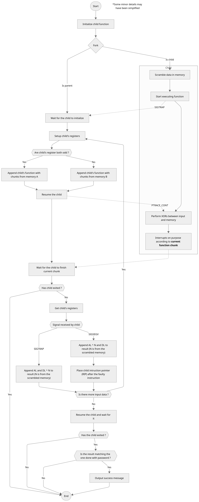
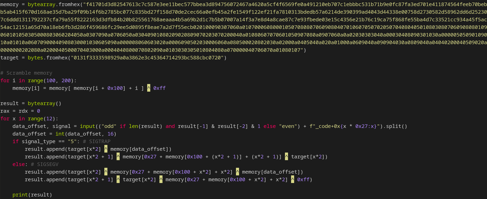